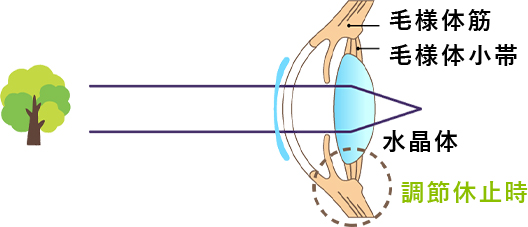
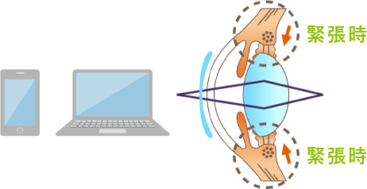

こんなお悩みありませんか？
- 目の疲れがなかなか取れない
- スマホやPCによる目のダメージが心配
- 見えづらさを感じるときがある
- 疲れると目がしょぼしょぼする
- 新聞や本の小さい文字が読みづらい
- 最近目のぼんやり間を感じることが多い
そんな目の不調を感じるあなたに
めにサプリビルベリー
30日分（60カプセル入り）
体の内側から「アイケア」を目指した
メニコン初の機能性表示食品
あなたのアイライフを優しくサポートします
- ピント調節に
- 目の疲労感に
ここに注目！
ものを見るとき、目の水晶体という部分の厚みが変化してピントが調節されます。
水晶体の厚みを変化させるのは、水晶体の周りにある毛様体筋（もうようたいきん）と呼ばれる筋肉です。
日常生活では、毛様体筋がゆるむことが少なく、緊張状態が持続していることが多いため、毛様体筋い大きな負担がかかり、
疲れ目の症状が現れます。
遠くを見るとき
窓の外など、遠くを見ているときはピント合わせをする毛様体筋の緊張がゆるんでいます。

近くを見るとき
窓の外など、遠くを見ているときはピント合わせをする毛様体筋の緊張がゆるんでいます。

このようなピント調節機能をサポートし、
目の疲労感を緩和することに
「めにサプリ ビルベリー」の成分、ビルベリ由来アントシアニンが
関連していると報告されています。
めにサプリビルベリーのこだわり
本当に良いものをお届けしたい！
瞳のプロ・メニコンが
こだわりぬいて開発しました。
メニコンのこだわり1
素材へのこだわり
北欧原産ビルベリーを100%使用
ビルベリー（学名Vaccinium myrtillus）はツツジ科スノキ属Myrtillu節の低木で、北欧を中心に自生する野生種のブルーベリーです。
実の特徴である青紫色の色素は「アントシアニン」と呼ばれるポリフェノールの一種です。
特に果実が完熟するなるの北欧では白夜で、ビルベリーは他のブルーベリーの品種と比較して、多くのアントシアニンを含むことが知られています。
メニコンのこだわり2
効用へのこだわり
栄養成分を逃さないカプセル設計
高温も高圧もかけずに製造可能で、高純度の成分をしっかり摂れるハードカプセルを採用。
また、カプセルには着色剤を使用していません。
ビルベリー由来アントシアニンは胃腸で吸収され、さらに含有成分のひとつであるラクトフェリンは、腸まで届けるようカプセル化されています。
60年の経験を土台に新たな挑戦
コンタクトレンズの研究・開発は、角膜に必要な酵素をより多く透過する材料であったり、
より装用感を良くするデザインであったりしましたが、それでもすべての方の満足を得られていません。
これを限りなく100%満足にするために何が必要かを考え、続けてきました。
涙袋だけを見てもその量、成分は個々人で大きく異なります。これらは遺伝的な要因もありますが、環境の要素も影響することが分かってきました。
どのような栄養素を摂り、どのように眼を使うかにより改善の余地があるということです。
様々な栄養素の情報を共有し、外部連携を進めることで、アイライフをサポートするサプリメントの開発に至りました。
お申し込みはこちら
メニコンがお届けする爽快ビルベリーライフ
スタートアップキャンペーン
めにサプリビルベリー30日定期お届けコース
通常価格 4,000円（税別）
今なら約50%OFF
初回限定1,980円 (税別)送料無料
２回目以降10%OFF3,600円（税別）
※定期便は、最低購入回数は設けておりません。休止・変更がいつでも可能です。
ショッピングガイド
お支払い方法
クレジット、後払い、代引きがご利用いただけます。
お届け・送料
ご注文確認後約１週間程度でお届けします。
定期購入は送料無料！
通常購入は宅配便550円・メール便440円です。
返品・交換
商品ご到着後、8日以内にご連絡ください。
詳しくはこちらをご確認ください。
定期お届けサービス
お好きな間隔で定期的にお届けする、便利でお得なサービスです。
お電話でのご注文・お問い合わせ
フリーコール
0120-933-656
受付時間：平日10:00〜17：00
メールでのご注文・お問い合わせ
お問い合わせフォームへ